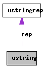

Main Page
Classes
Files
Class List
Class Hierarchy
Class Members
ustring Struct Reference
Collaboration diagram for ustring:

[
legend
]
List of all members.
Public Attributes
ustringrep
*
rep
The documentation for this struct was generated from the following file:
src/ulib/string.cpp
Generated on Fri Apr 9 19:02:07 2010 for ULib C++ Library by
1.6.3